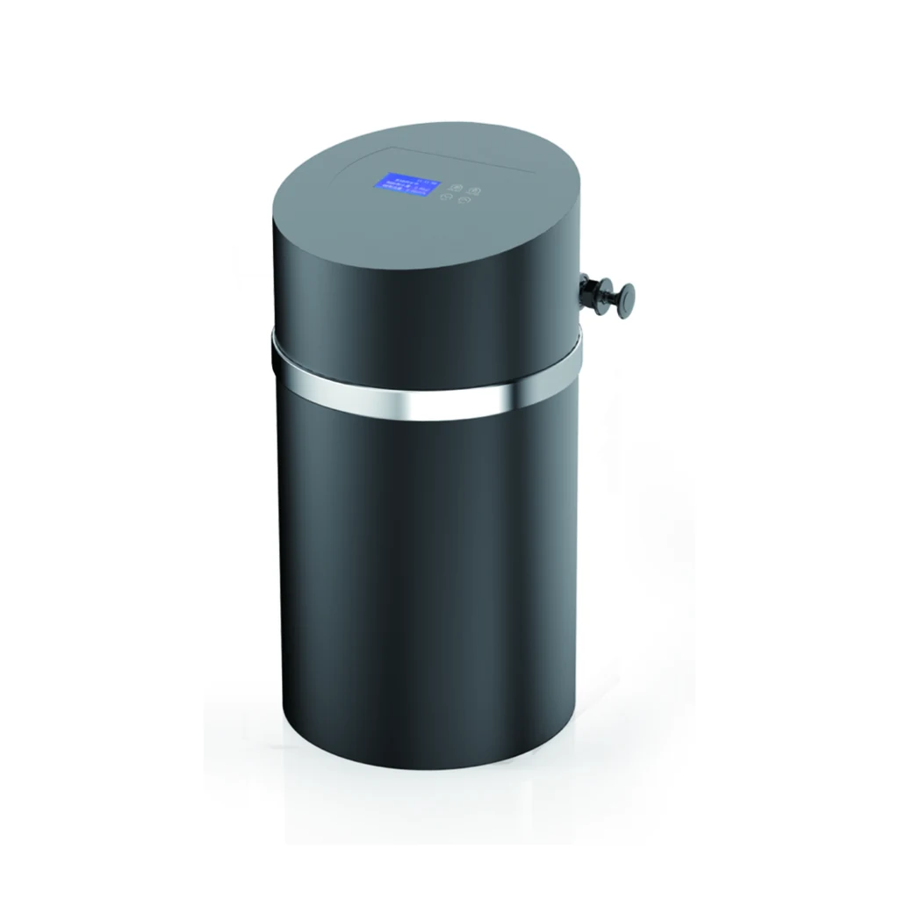
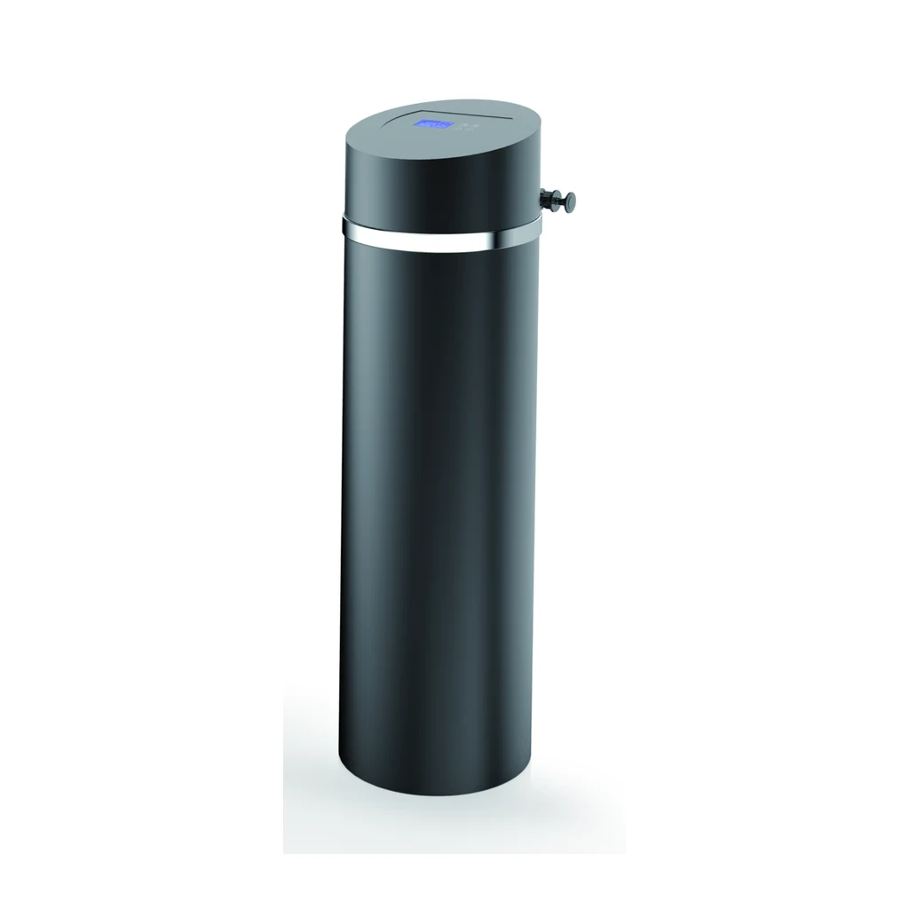

Máy lọc nước tự động
YC-J1000A
YC-J1000A có kích thước sản phẩm (kèm bộ bypass) được liệt kê trong nguồn là 299X299X567mm.
Yêu cầu báo giá cho YC-J1000ASo sánh dòng tủ hình trụ YC-JA theo ba cấu hình về lưu lượng, than hoạt tính và bình FRP được liệt kê trong nguồn.
Mỗi hình ảnh được cắt theo quy tắc cố định, có thể tái lập, từ vùng chỉ chứa sản phẩm trong PDF đã được phê duyệt; không có hình dạng hình học, màu sắc, bộ điều khiển hay phụ kiện nào của sản phẩm được vẽ lại.

YC-J1000A có kích thước sản phẩm (kèm bộ bypass) được liệt kê trong nguồn là 299X299X567mm.
Yêu cầu báo giá cho YC-J1000A
YC-J2000A có kích thước sản phẩm (có đường bypass) được liệt kê trong nguồn là 299X299X781mm.
Yêu cầu báo giá cho YC-J2000A
YC-J3000A có kích thước sản phẩm (kèm đường bypass) được ghi trong nguồn là 299X299X1070mm.
Yêu cầu báo giá cho YC-J3000ABảng so sánh dòng máy lọc nước tự động YC-JA sử dụng các mã định danh YC công khai đã được chủ sở hữu phê duyệt. Mọi giá trị kỹ thuật và đơn vị bên dưới đều giữ nguyên cách ghi trong nguồn đã được rà soát.
| Thông số | YC-J1000A | YC-J2000A | YC-J3000A |
|---|---|---|---|
| Loại van | Van lọc tự động | Van lọc tự động | Van lọc tự động |
| Áp suất làm việc | 0.15-0.5MPa | 0.15-0.5MPa | 0.15-0.5MPa |
| Nhiệt độ làm việc | 5~48℃ | 5~48℃ | 5~48℃ |
| Nguồn điện | 220V/110 50Hz | 220V/110 50Hz | 220V/110 50Hz |
| Kích thước cổng nước vào và nước ra | 3/4" | 3/4" | 3/4" |
| Lưu lượng | ≤1.0T/H | ≤2.0T/H | ≤3.0T/H |
| Thể tích than hoạt tính | 12L | 18L | 25L |
| Kích thước bình FRP | 1015 | 1024 | 1035 |
| Kích thước sản phẩm (kèm bộ bypass) | 299X299X567mm | 299X299X781mm | 299X299X1070mm |
Bảng thông số đã được rà soát của dòng máy lọc nước tự động YC-JA nêu van lọc tự động và thể tích than hoạt tính. Trong cấu hình lọc điển hình, van điều khiển chu trình vận hành và làm sạch của bình FRP; cấp chất lượng vật liệu lọc và hiệu quả xử lý đã được kiểm chứng cần được xác nhận riêng.
YC-J2000A được liệt kê với lưu lượng ≤2.0T/H, thể tích than hoạt tính 18L, kích thước bình FRP 1024 và kích thước sản phẩm (bao gồm bộ đường vòng) 299X299X781mm.
YC-J1000A được ghi với lưu lượng ≤1.0T/H và thể tích than hoạt tính 12L; YC-J3000A được ghi với lưu lượng ≤3.0T/H và thể tích than hoạt tính 25L.
Không. Mỗi giá trị lưu lượng YC-JA được giữ nguyên dưới dạng một dòng thông số để lựa chọn như được ghi trong nguồn và phải được xác nhận dựa trên điều kiện nước cấp và thiết kế hệ thống.
Cung cấp mã model YC-JA chính xác, kết quả phân tích nước cấp, yêu cầu về nguồn điện, thông tin kết nối, cấu hình dự kiến và số lượng cho dự án.